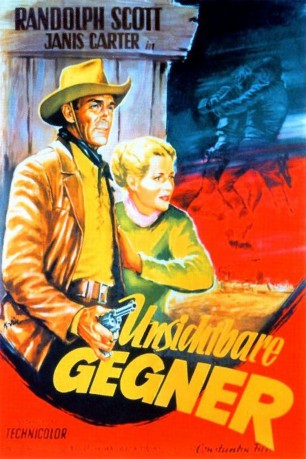
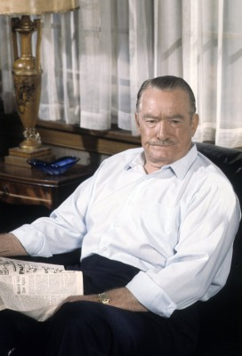
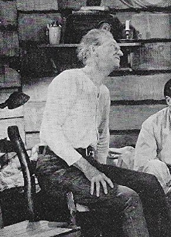
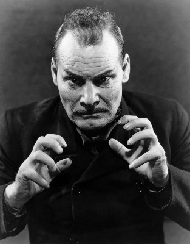
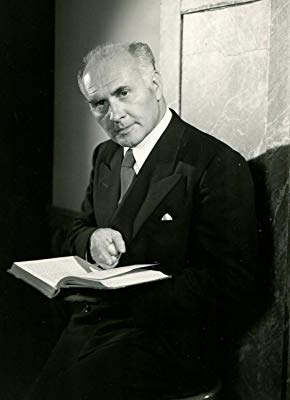
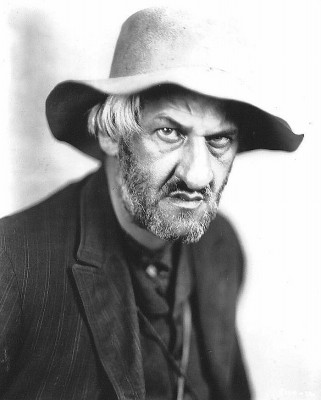

#3224 Unsichtbare Gegner
Alternativ: Santa Fe
 
 IMDB-Wertung: 6.3 / 10
IMDB-Wertung: 6.3 / 10  Metascore: 0
Metascore: 0 
Britt Canfield (Randolph Scott), einer von vier Brüdern, ist ehemaliger Konföderierter, dessen Plantage von einigen Siegern des Bürgerkrieges besetzt wurde. So also hat er keine andere Wahl, als bei dem Bau der Eisenbahnlinie, die von den Yankees finanziert wird, zu helfen. Doch das ganze wird zu einem harten Kampf, denn er muss nicht nur gegen Indianer, Spielsüchtige und rachsüchtige Kriegswitwen angehen, sondern in erster Linie gegen seine Brüder, die den Yankees äußerst feindlich gegenüber stehen.
Jahr: 1951
Dauer: 83 Minuten
FSK: 12
Land: USA Studio: Columbia PicturesTonspuren: DD2.0 - ,
Untertitel:
Auflösung: 1080p (1440x1080) Größe: 4966 MB
Genre: Action, Western, Liebe
Regisseur: Irving Pichel
Drehbuch: Kenneth Gamet, Donald G. Payne, Louis Stevens
Soundtrack: Paul Sawtell
Darsteller:
 Randolph Scott als Britt Canfield
Randolph Scott als Britt Canfield-  Roy Roberts als Cole Sanders
- Jock Mahoney als Crake, Sanders' Henchman
 Frank Ferguson als Marshal Bat Masterson
Frank Ferguson als Marshal Bat Masterson- Irving Pichel als Harned
- Chief Thundercloud als Chief Longfeather
 Lane Chandler als Gang Member , uncredited
Lane Chandler als Gang Member , uncredited Franklyn Farnum als Man at Railroad Dedication , uncredited
Franklyn Farnum als Man at Railroad Dedication , uncredited William Haade als Union Veteran , uncredited
William Haade als Union Veteran , uncredited Frank Hagney als RR Worker , uncredited
Frank Hagney als RR Worker , uncredited Reed Howes als Henchman , uncredited
Reed Howes als Henchman , uncredited- Janis Carter als Judith Chandler
- Jerome Courtland als Terry Canfield
- Peter M. Thompson als Tom Canfield
- John Archer als Clint Canfield
- Warner Anderson als Dave Baxter
- Billy House als Luke Plummer
-  Olin Howland als Railroad Fireman Dan Dugan
- Allene Roberts als Ella Sue Canfield
-  Harry Cording als Moose Legrande
- Sven Hugo Borg als 'Swede' Swanstrom
 Harry Tyler als Rusty
Harry Tyler als Rusty Paul E. Burns als Uncle Dick Wootton
Paul E. Burns als Uncle Dick Wootton Victor Adamson als RR Worker , uncredited
Victor Adamson als RR Worker , uncredited- Emile Avery als Fight Spectator , uncredited
 Stanley Blystone als Deputy , uncredited
Stanley Blystone als Deputy , uncredited- Rudy Bowman als Minor Role , uncredited
- Roy Butler als Wagon Driver , uncredited
 Heinie Conklin als Barfly , uncredited
Heinie Conklin als Barfly , uncredited- Richard Cramer als Missouri Bartender , uncredited
 Edgar Dearing als Official , uncredited
Edgar Dearing als Official , uncredited- Jack Deery als Official , uncredited
-  Charles Evans als Stevenson , uncredited
- Budd Fine als RR Worker , uncredited
- Dick Fortune als Deputy , uncredited
- Jack Gordon als RR Worker , uncredited
 Chuck Hamilton als Gang Member , uncredited
Chuck Hamilton als Gang Member , uncredited- Lars Hensen als Townsman , uncredited
 Jack Kenny als Railroad Worker , uncredited
Jack Kenny als Railroad Worker , uncredited- James Kirkwood als Surveyor , uncredited
- Al Kunde als Singer , uncredited
- Mike Lally als RR Worker , uncredited
- Richard LaMarr als Saloon Worker , uncredited
- Art Loeb als RR Worker , uncredited
- Jim Mason als RR Worker , uncredited
- Louis Mason als Fiddle Contest Bettor , uncredited
- Merrill McCormick als Townsman , uncredited
 Francis McDonald als Corporal Fletcher Murphy, Union Veteran , uncredited
Francis McDonald als Corporal Fletcher Murphy, Union Veteran , uncredited Charles Meredith als Official in Santa Fe , uncredited
Charles Meredith als Official in Santa Fe , uncredited-  Robert Milasch als Bartender , uncredited
Datei: X:\HD-Western-1900-1959\Unsichtbare Gegner (1951, FSK12, 1440x1080).mkv seit 19.02.2016
Festplatte: HD Eastern+Western
 Es gibt insgesamt 98 Filme in der Gruppe 'HD-Western-1900-1959'
Es gibt insgesamt 98 Filme in der Gruppe 'HD-Western-1900-1959'